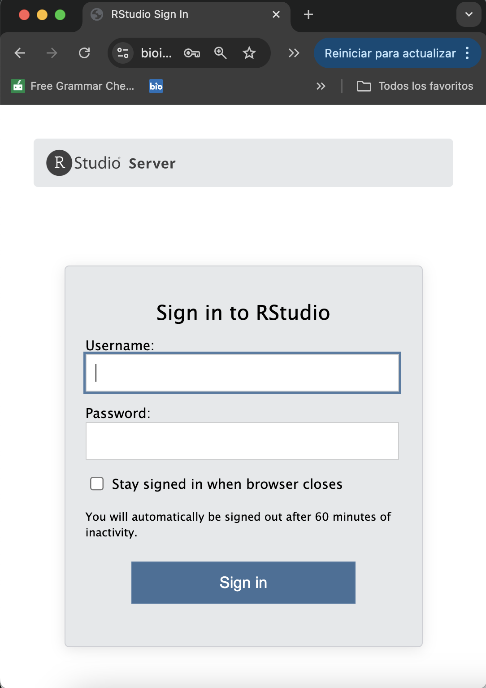
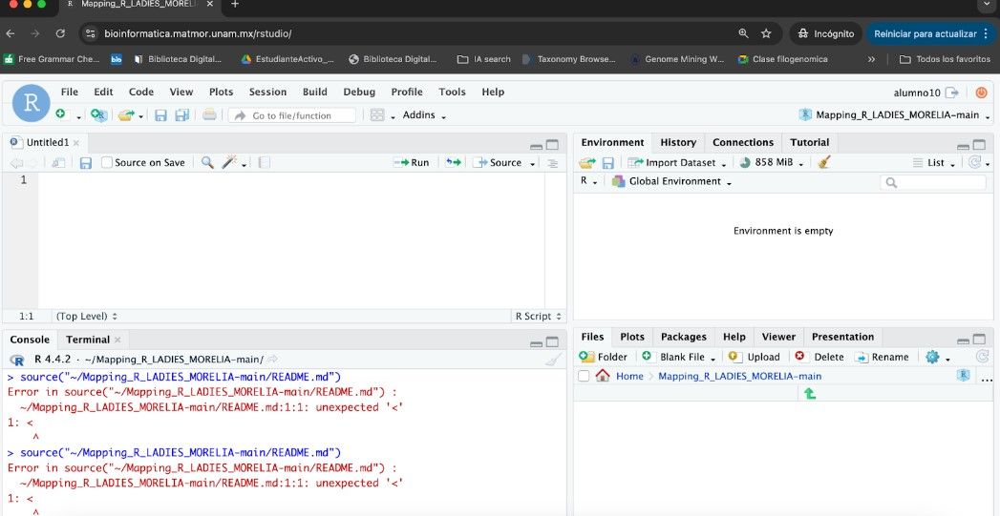
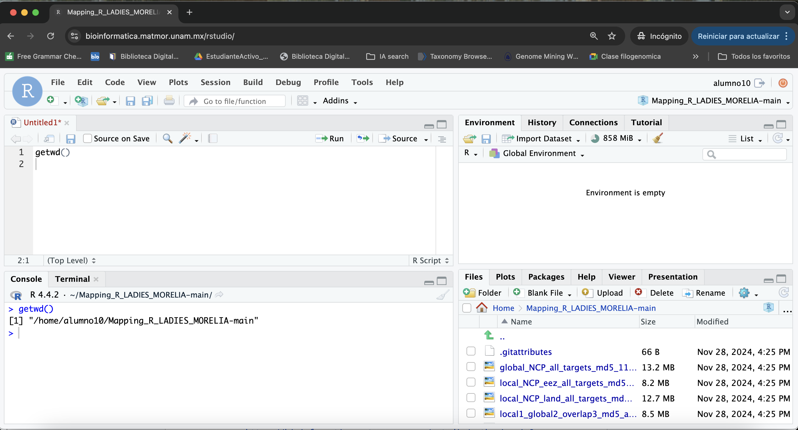
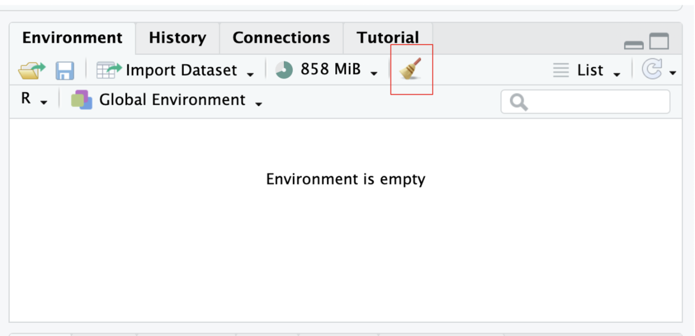
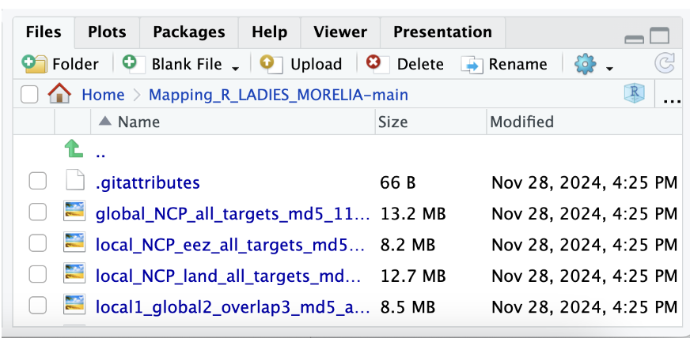
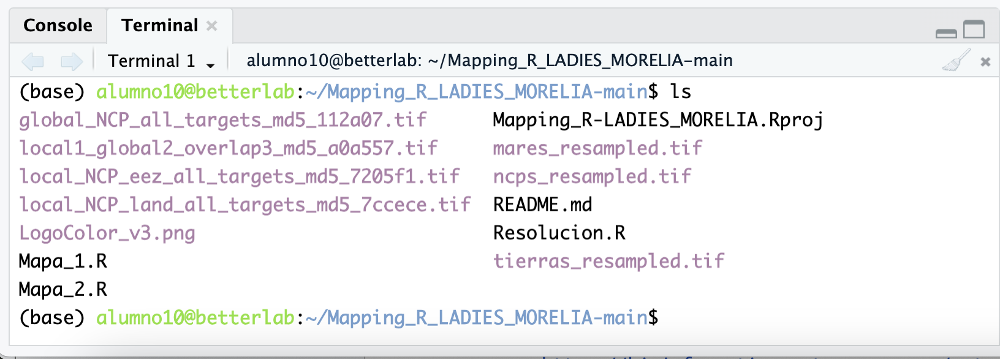

3 Cómo acceder al servidor Bettertab en RStudio
Este tutorial te guiará para acceder al servidor Betterlab utilizando una interfaz gráfica de RStudio a través de un enlace.
3.1 Paso 1: Verifica los requisitos previos
Antes de comenzar, asegúrate de contar con lo siguiente:
- Un navegador web actualizado (Chrome, Firefox o Edge).
- Credenciales de acceso: nombre de usuario y contraseña, proporcionados por el administrador del servidor.
- El enlace de acceso al servidor Betterlab:
https://bioinformatica.matmor.unam.mx/rstudio/auth-sign-in?appUri=%2F
Los instructores te han proporcionado la lista de usuarios de Betterlab.
Escribe tu nombre en alguno de los usuarios disponibles y toma nota de tu usuario y contraseña.
3.2 Paso 2: Accede al enlace
Abre tu navegador web e ingresa el siguiente URL en la barra de direcciones (copia y pega o da clic al link):
https://bioinformatica.matmor.unam.mx/rstudio/auth-sign-in?appUri=%2FPresiona Enter para cargar la página.

3.3 Paso 3: Inicia sesión
En la pantalla de inicio de sesión, introduce tus credenciales, por ejemplo:
- Usuario: alumno10.
- Contraseña: (Escribe la contraseña correspondiente de la hoja de usuarios)
- Haz clic en Iniciar sesión o presiona Enter.
3.4 Paso 4: Explora RStudio en Bettertab
Una vez que hayas iniciado sesión, se abrirá la interfaz de usuario de RStudio. Aquí puedes:
- Crear, cargar y ejecutar scripts en R.
- Gestionar tus proyectos.
- Acceder a datos y recursos alojados en el servidor Bettertab.
- Cuando entramos veremos cuatro ventanas:

3.4.1 1. Script o Editor de Código (Ventana superior izquierda)
- Uso: Aquí escribes, editas y guardas tus scripts de R.
- Características principales:
- Puedes abrir varios archivos a la vez en pestañas.
- Permite ejecutar líneas o bloques de código presionando Ctrl+Enter (o Cmd+Enter en Mac).
- Prueba: Haz el comando getwd() para saber cual es tu directorio de trabajo

3.4.2 2. Consola (Console) (Ventana inferior izquierda)
- Uso: Aquí se ejecuta el código de manera directa.
- Muestra los resultados y mensajes de salida.
- Características:
- Puedes escribir comandos directamente para probar ideas rápidas.
- Repite el mismo ejercicio anterior.
3.4.3 3. Entorno y/o Historial (Ventana superior derecha)
- Pestaña Entorno: Muestra los objetos que has creado (como variables, funciones, y datos cargados).
- Pestaña Historial: Muestra todos los comandos ejecutados en la sesión.
- Tip: Puedes hacer clic en los objetos para inspeccionarlos o eliminarlos (botón de escoba).

3.4.4 4. Archivos, Gráficos, Paquetes, y Ayuda (Ventana inferior derecha)
Uso:
- Archivos: Explora las carpetas y archivos en tu directorio de trabajo.
- Gráficos: Muestra los gráficos generados con tu código.
- Paquetes: Administra e instala paquetes de R.
- Ayuda: Busca documentación sobre funciones y comandos de R.

3.4.5 Terminal (Bash)
Pestaña en la ventana inferior izquierda, junto a la Consola.
Uso:
- Es un terminal de línea de comandos para ejecutar comandos en Bash directamente desde RStudio.
- Útil para tareas del sistema, como mover archivos, instalar software o trabajar con Git.
- Ejemplo: Puedes usar ls para listar archivos.

3.5 Paso 5: Cerrar sesión
Cuando termines de trabajar:
- Haz clic en el botón Cerrar sesión ubicado en la esquina superior derecha.
- Cierra la pestaña del navegador para garantizar que tu sesión quede cerrada.
3.6 Material suplementario
- Nelly Selem Tutorial - Bioinformática
- En Windows puedes usar Git Bash.
- Entrar a un servidor desde SSH